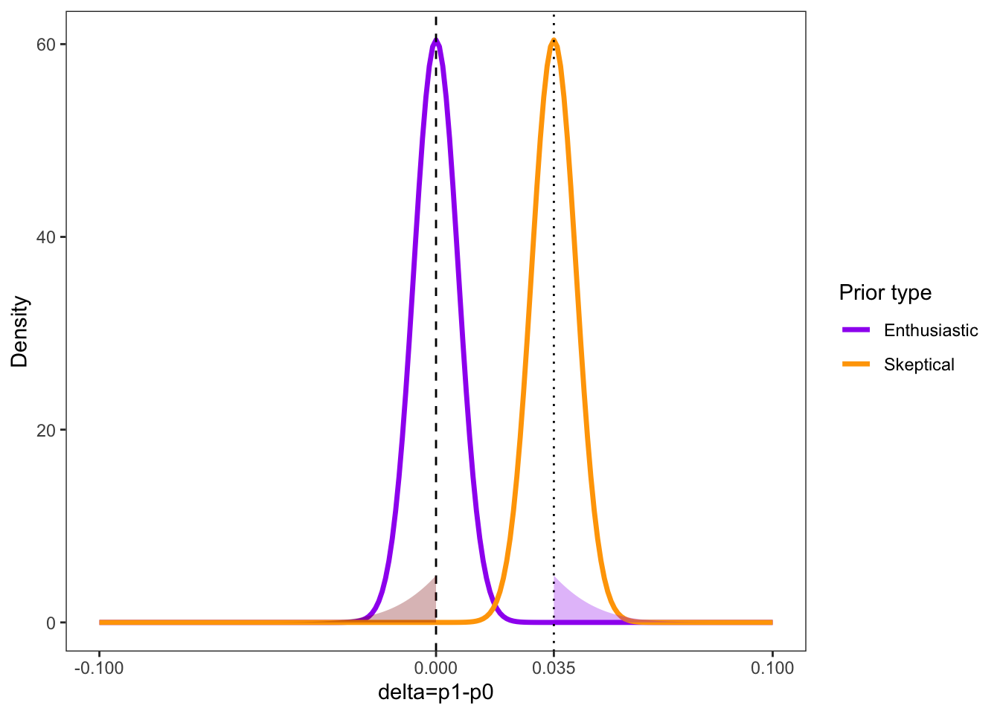
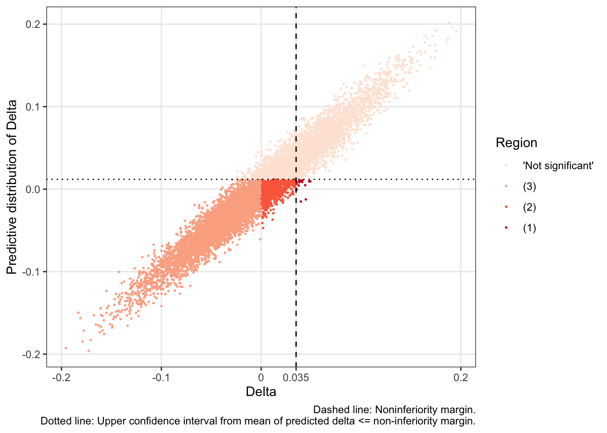
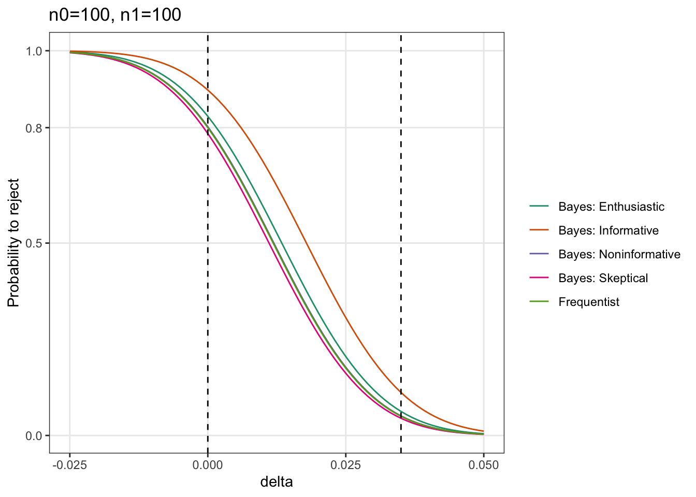
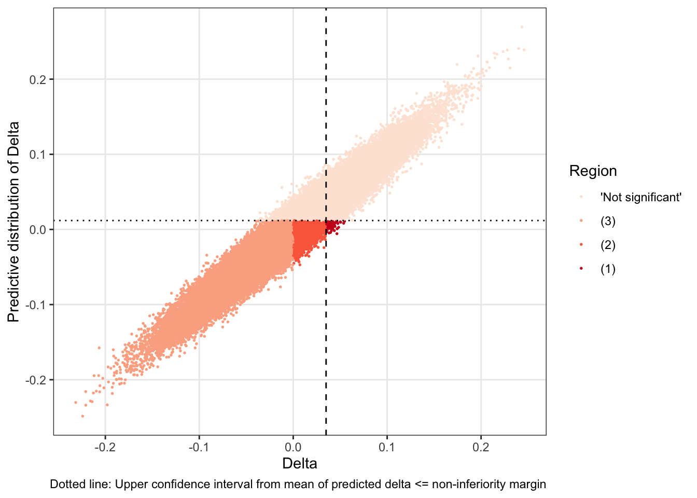

Chapter 2 Non-inferiority setting
2.1 Aim
- Overview ‘power’ terminology
- Focus on ‘hybrid’ approach (95%), 5% proper Bayesian
- Use of SAFE-SSPE trial as example
Definition ‘hybrid’ (Spiegelhalter 2004, Section 6.5.2)
‘[…] we have a prior distribution to use in our study design, but that the conclusions of the study will be entirely classical and will not make use of the prior […]’
2.2 A timeline of selected literature
- Book of Spiegelhalter (2004): Bayesian Approaches to Clinical Trials and Health Care Evaluation
- O’Hagan (2005): Assurance in Clincial Trials
- Rufibach et al (2016): Bayesian predictive power: choice of prior […]
- Kunzmann et al. (2021): A review of Bayesian Perspectives on Sample Size Derivations from Confirmatory Trials
- Book of Grieve (2022): Hybrid Frequentist/Bayesian Power and Bayesian Power in Planning Clinical Trials
2.3 Clinical trial setting
- Non-inferiority trial with \(H_0: \delta > \delta^*\) and \(H_a: \delta \leq \delta^*\), where \(\delta^*>0\) non-inferiority margin and treatment effect \(\delta=\mu_1-\mu_0\) with \(Y_{i,1}, \dots, Y_{i,n} \sim^{iid} N\left(\mu_i, \sigma^2\right)\), \(i\in {0,1}\), \(\sigma_i^2\) known, \(N=2n\)
- SAFE-SSPE: Clinical surveillance (\(Y_{1}\)) vs anticoagulant treatment (\(Y_{0}\)). Primary outcome is difference in proportions (\(p_1-p_0\)) of patients with recurrent venous thromboembolism (VTE). \(H_0:\) Clinical surveillance is inferior to anticoagulant treatment, \(H_a:\) clinical surveillance is non-inferior.
2.5 Frequentist sample size
- \(H_0: \delta>\delta^*\) vs \(H_A: \delta\leq\delta^*\)
- Let \(D=\overline{Y}_{1}-\overline{Y}_{0}\) then \(D \sim N\left(\delta, \frac{\tilde\sigma^2}{n}\right)\), where \(\tilde\sigma^2=\sigma_1^2+\sigma_1^2\)
- Let \(Z=\sqrt{n}(D-\delta)/\tilde\sigma \sim N(\sqrt{n}(\hat\delta-\delta)/\tilde\sigma, 1) \rightarrow^{asym} N(0,1)\).
- ‘Power’ (conditional!): \(P(S^{F}|\delta)=P_{\delta}(Z\leq - z_{1-\alpha})= \Phi\left(-z_{1-\alpha}-\frac{\sqrt{n}}{\tilde\sigma}(\delta-\delta^*)\right)\)
- Sample size: \(n=(z_{1-\beta}+z_{1-\alpha})^2\frac{\tilde\sigma^2}{(\delta-\delta^*)^2}\) (one arm), here \(\sigma_i^2=p_i(1-p_i)\), \(i\in {0,1}\).
2.6 Frequentist sample size
Assumptions for sample size calculation specified in study protocol:
- \(p_1=0.01\), \(p_0=0.01\), \(\delta^*=0.035\), \(1-\beta=0.8\), \(\alpha=0.05\)
library(epiR)
alpha <- 0.05
beta <- 0.2
p_0 <- 0.01
p_1 <- 0.01
delta <- p_1-p_0
delta_star <- 0.035
sd_formula <- sqrt(p_0*(1-p_0)+p_1*(1-p_1))
epi.ssninfb(treat=p_1, control=p_0, delta=delta_star, power=1-beta, alpha=alpha, n=NA)$n.total## [1] 200n <- 2*((qnorm(1-beta)+qnorm(1-alpha))^2)*((sd_formula^2)/(delta-delta_star)^2)
n## [1] 199.86062.7 Frequentist sample size
- Choice of \(\delta_A\) and \(\delta^*\) in a frequentist setting assumed as fixed
- At the same time of high importance, because all trial conclusions are based on the (point estimate) choices

2.8 Frequentist sample size
What about uncertainty in those choices?
From the study protocol:
‘We believe that our non-inferiority margin is acceptable to most physicians and patients for the following reasons. First, our margin is within the range of the 3-month VTE recurrence proportion (0.5-5%) below which thrombosis specialists would not initiate anticoagulation for PE.’
- Very reasonable that \(0.005\leq\delta^*<0.05\)
- Very reasonable that \(\delta=0\) is not ‘true’, but has uncertainty
2.9 Frequentist sample size
- Choice of \(\delta_A\) and \(\delta^*\) in a frequentist setting assumed as fixed
- At the same time of high importance, because all trial conclusions are based on the (point estimate) choices

2.10 Hybrid approach
- Suppose \(\delta\) is a realization from a random variable \(\Delta\) with Gaussian prior \(\Delta \sim N\left(d, \frac{\tilde\sigma^2}{n_0}\right)\).
- Prior is defined before data collection (‘design prior’).
- Enthusiastic prior (favors non-inferiority): \(d=0\), \(n_0=6.6\), \(P(\Delta>\delta^*)=0.05\).
- Skeptical prior (favors inferiority): \(d=\delta^*\), \(n_0=6.6\), \(P(\Delta>0)=0.05\).
- Informative prior (clinical expert knowledge): \(d=0\), with \(n_0=25\).
- Noninformative prior (please do not use in practice!): \(d=0\), with \(n_0=0.5\).

2.12 Hybrid approach
- ‘Power’: \(P(S_{1-\alpha}|\delta, \delta^*)=\Phi\left(-z_{1-\alpha}-\sqrt{\frac{n}{\tilde\sigma^2}}(\delta-\delta^*)\right)\)
- ‘Average power’ (Grieve), assurance (O’Hagan), probability of success (!) (Kunzmann et al., Spiegelhalter): \(AP=\int_{\Delta} P(S^{F}|\delta, \delta^*)p(\delta)d\delta\), where \(\Delta \sim p(\delta)\)
- \(AP=\Phi\left(\sqrt{\frac{n_0}{n_0+n}}\left[-z_{1-\alpha}-\sqrt{\frac{n}{\tilde\sigma^2}}(d-\delta^*)\right]\right)\)
- Upper bound of AP: \(AP \rightarrow \Phi\left(-(d-\delta^*)\sqrt{\frac{n_0}{\tilde\sigma^2}}\right)\), as \({n \rightarrow \infty}\)
- As \(n_0 \rightarrow \infty\): \(AP \rightarrow P(S_{1-\alpha}|d)\) (aka classical power at \(d\))
2.13 Hybrid approach
Results:
## type n_0 n AP upper_AP
## 1 Enthusiastic 6.6 100 0.58 0.74
## 2 Informative 25.0 100 0.65 0.89
## 3 Noninformative 0.5 100 0.52 0.57
## 4 Skeptical 6.6 100 0.34 0.50Question: Is 58% (AP) low compared to 80% (classical ‘power’)?
Results easily can include inclusion of uncertainty about \(\delta^*\), say, \(\delta^*\sim Un(0.005, 0.05)\).
2.14 Implications
Rufibach et al. (2016) give a closed a formula for the distribution of \(RPR:=P_{\Delta}(Z\leq - z_{1-\alpha})\), where \(\Delta \sim N(d,\tilde\sigma^2/n_0)\), and discuss the shape under different prior choices (RPR=’Random probability to reject`, see Kunzmann et al.)
- u-shaped if \(n_0<n\) (‘prior sample’ size is smaller than planned sample size)
## Warning: Removed 128 rows containing missing values (`geom_line()`).
2.15 Implications
- unimodal if \(n=n_0\)
- ‘hill’-shape if \(n_0>n\) (rather unrealistic interpretation)
## Warning: Removed 9 rows containing missing values (`geom_line()`).
2.17 Decomposition of AP
- AP integrates over whole \(\delta\) range, including ‘non-favorable’ \[ AP=\overbrace{P(Z\leq - z_{1-\alpha}, \Delta>\delta^*)}^{(1)}+\overbrace{P(Z\leq - z_{1-\alpha}, 0<\Delta\leq\delta^*)}^{(2)} \\ +\overbrace{P(Z\leq - z_{1-\alpha}, \Delta\leq0)}^{(3)} \]
- AP=(1) Probability of Type-I error + (2) ‘Non-inferior, but treatment effect not relevant’ + (3) ‘Non-inferior, treatment effect relevant’
- \(AP \approx P(Z\leq - z_{1-\alpha}, \Delta\leq0)\) (see Spiegelhalter), pharma (favors AP, shortterm) vs regulators (favors the other, longterm), see discussion in Kunzmann et al.
2.18 Decomposition of AP
Under enthusiastic prior:

## region prop
## 1 'Not significant' 0.41627
## 2 (3) 0.49073
## 3 (2) 0.09161
## 4 (1) 0.001392.19 Expected power
\[ AP=\overbrace{P(Z\leq - z_{1-\alpha}, \Delta>\delta^*)}^{(1)}+\overbrace{P(Z\leq - z_{1-\alpha}, 0<\Delta\leq\delta^*)}^{(2)} \\ +\overbrace{P(Z\leq - z_{1-\alpha}, \Delta\leq0)}^{(3)} \] For our noninferiority setting consider (2)+(3).
\[ P(Z\leq - z_{1-\alpha}, \Delta\leq\delta^*)=P(Z\leq - z_{1-\alpha}|\Delta\leq\delta^*)P(\Delta\leq\delta^*)\\=\underbrace{E\left[P_{\Delta\leq\delta^*}(Z\leq - z_{1-\alpha})\right]}_{EP}P(\Delta\leq\delta^*), \] where \(EP\) is ‘expected power’ (Kunzmann et al.).
2.20 To make things more powerful confusing
Spiegelhalter calls \(P(Z\leq - z_{1-\alpha}, \Delta\leq\delta^*)\) the ‘prior adjusted power’ (PAP):
\[ \underbrace{P(Z\leq - z_{1-\alpha}, \Delta\leq\delta^*)}_{PAP}=\underbrace{E\left[P_{\Delta\leq\delta^*}(Z\leq - z_{1-\alpha})\right]}_{EP}\underbrace{P(\Delta\leq\delta^*)}_{constant} \]
2.21 EP, PAP, AP
Noninferiority setting \(\Delta\leq\delta^*\):
## ep pap ap const type
## 1 0.6797 0.3398 0.3418 0.5000 Skeptical
## 2 0.7861 0.5806 0.5828 0.7386 Enthusiastic
## 3 0.7226 0.6454 0.6470 0.8932 Informative
## 4 0.9186 0.5234 0.5233 0.5698 Noninformative2.22 Conditional Bayesian power
- Uses posterior distribution to define ‘Bayesian significance’: \(S^B:=P(\Delta\leq\delta^*|data)=1-\epsilon\), (not \(\alpha\))
- Remember \(D=\overline{Y}_{1}-\overline{Y}_{0}\) with \(D \sim N(\delta, \frac{\tilde\sigma^2}{n})\), where \(\tilde\sigma^2=\sigma_1^2+\sigma_1^2\)
- Suppose (again) \(\Delta \sim N(d, \tilde\sigma^2/n_0)\) then the posterior distribution is \(\Delta|D \sim N\left(\frac{n_0d+nD}{n_0+n}, \frac{\tilde\sigma^2}{n_0+n}\right)\)
- \(P(S^B|\delta)=\Phi\left(-\sqrt{\frac{n_0+n}{n}}z_{1-\epsilon}-\frac{\sqrt{n}}{\tilde\sigma}\left[\delta-\frac{n_0+n}{n}\delta^*+\frac{n_0}{n}d\right]\right)\)
- \(P(S^{F}|\delta)=\Phi\left(-z_{1-\alpha}-\frac{\sqrt{n}}{\tilde\sigma}(\delta-\delta^*)\right)\)
2.23 Conditional Bayesian power

## delta y type
## 1 0.000 0.83 Bayes: Enthusiastic
## 2 0.035 0.06 Bayes: Enthusiastic
## 3 0.000 0.78 Bayes: Skeptical
## 4 0.035 0.04 Bayes: Skeptical
## 5 0.000 0.80 Frequentist
## 6 0.035 0.05 Frequentist2.24 Average Bayesian power
- \(P(S^B)=\Phi\left(-\sqrt{\frac{n_0}{n}}z_{1-\epsilon}-\frac{\sqrt{n_0}\sqrt{n_0+n}(d-\delta^*)}{\sqrt{n}\tilde\sigma }\right)\)
## type AP AP_bayes
## 1 Enthusiastic 0.583 0.594
## 2 Skeptical 0.341 0.336
## 3 Informative 0.647 0.715
## 4 Noninformative 0.524 0.524Of course, Bayesian average power can again be decomposed into EP and PAP.
2.25 Power vocabulary summary (💪)
- ‘Power’: Classical power which is conditional on a fixed alternative point estimate. Probability to reject.
- Bayesian power: Using posterior distribution.
- Conditional power: Frequentist power in interim analysis (not discussed here).
- Average power: Marginal probability of rejection, classical power ‘averaged’ over (design) prior. Assurance. Bayesian predictive power.
- Expected power: Weighted average of the probability to reject in a ‘relevant’ region. Also called conditional expected power (😕).
- Probability of success (PoS): Very often authors use PoS for ‘average power’. Depends on success definition.